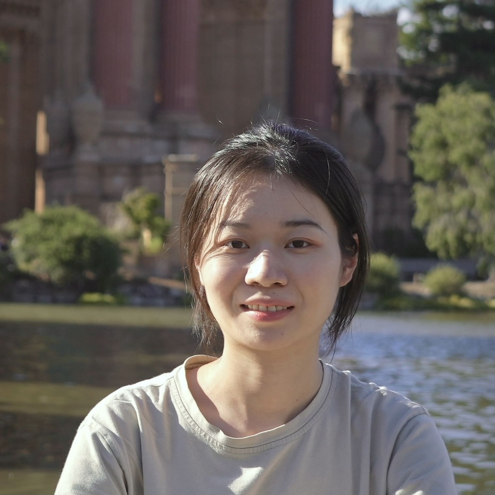

Federated Likelihood-based Inference via Sobolev Neural Approximation
Manuscript, 2026. Under revision.
Neural representations of local likelihoods for one-shot federated estimation and inference without pooling individual-level data.

Postdoctoral Researcher
Department of Biostatistics, Epidemiology and Informatics
University of Pennsylvania
I am a postdoctoral researcher at the University of Pennsylvania, working with Professor Yong Chen. I received my Ph.D. in Mathematics from the Hong Kong University of Science and Technology in 2023, advised by Professors Yang Xiang and Ke Wang.
My research develops theory and methods for statistical learning and scientific computing, with an emphasis on reliability and computational efficiency. I design and analyze neural function representations tailored to the mathematical structure and practical constraints of each problem. My recent work focuses on learning from distributed, heterogeneous, and imperfect data. This work spans federated inference, transfer learning, and AI methods for data analysis, with applications to biomedical research.
I am on the academic job market for the 2026-2027 cycle. Please feel free to reach out.
Manuscript, 2026. Under revision.
Neural representations of local likelihoods for one-shot federated estimation and inference without pooling individual-level data.
Manuscript, 2026. Under review.
Leveraging low-complexity source-to-target adjustments to improve nonparametric regression across heterogeneous domains.
Manuscript, 2026. Under revision.
Using negative controls to guide neural pruning and fine-tuning for observational data analysis.
Manuscript, 2026. Under revision.
A data-driven framework for evaluating trade-offs in clinical trial eligibility criteria using real-world data.
Journal of Computational Physics, 503:112859, 2024
Neural Networks, 161:598–613, 2023
Journal of Scientific Computing, 2026
Accepted for publication in Multiscale Modeling and Simulation, 2026
Preprint, 2023. Under revision.
SIAM Conference on Mathematics of Data Science, Salt Lake City Invited · Upcoming
Joint Statistical Meetings, Boston
Joint Statistical Meetings, Nashville
International Congress on Industrial and Applied Mathematics, Waseda University, Tokyo
Department of Mathematics, Shanghai Jiao Tong University
SIAM Conference on Mathematical Aspects of Materials Science, virtual
Teaching Assistant, Hong Kong University of Science and Technology
Teaching interests: Calculus, linear algebra, statistical learning, and machine learning.
Journal reviewer: SIAM Journal on Numerical Analysis.
Session chair: First HKUST SIAM Student Chapter Annual Meeting, June 2023.